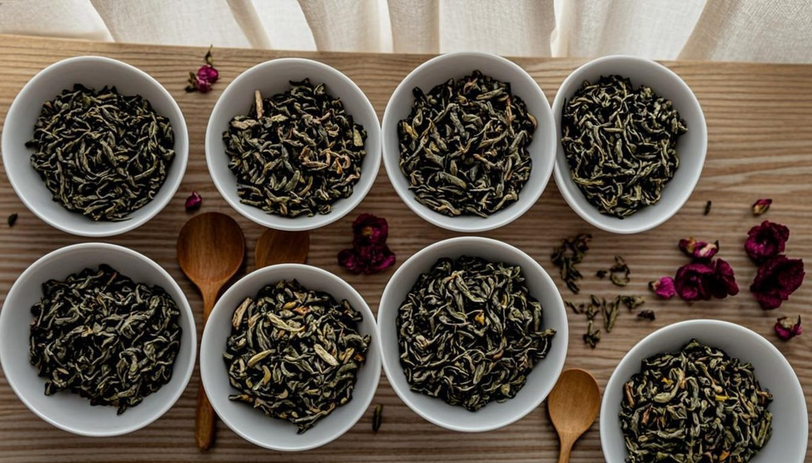

Nachhaltigkeit & Qualität
Guter Tee braucht gute Bedingungen
Woher kommt unser Tee, unter welchen Bedingungen wächst er und wie verpacken wir ihn? Hier zeigen wir es offen, auch dort, wo wir noch am Anfang stehen.

Nachhaltigkeit
Verantwortung für Umwelt und Menschen
Ein modernes Unternehmen sollte Verantwortung für seine Auswirkungen auf die Umwelt nicht nur verstehen, sondern auch tragen. Deshalb ist GoSipTea bestrebt, seinen Tee so nachhaltig wie möglich zu gestalten, von der Auswahl der Gärten über die Verarbeitung bis zur Verpackung.
Faire Bedingungen in der gesamten Wertschöpfungskette sollen sicherstellen, dass nicht nur Kund:innen, sondern auch die Menschen hinter dem Produkt berücksichtigt werden.
- Klimaneutrale Lieferketteschrittweise umgesetzt, offen kommuniziert
- Plastikfreie Verpackungaromasichere, wiederverschließbare Beutel

Qualität & Herkunft
Transparenz bis zur Tasse
Transparenz bedeutet für uns, deutlich zu machen, wo der Tee angebaut wird, woher die Zutaten stammen und unter welchen Bedingungen das Produkt hergestellt wird. Auf jeder Produktdetailseite findest du deshalb Herkunftsangaben, Zutatenlisten und Zubereitungsempfehlungen.
Qualität entsteht für uns durch kleine Chargen, schonende Verarbeitung und Sorten, die geschmacklich überzeugen. Nicht durch übertriebene Versprechen.
Ehrlichkeit statt Greenwashing. Unsere Nachhaltigkeitsangaben beschreiben Ziele und laufende Schritte, die wir regelmäßig prüfen. Was wir noch nicht belegen können, sagen wir offen dazu, statt Zertifikate oder Siegel zu versprechen, die es so noch nicht gibt. Genau diese Transparenz ist Teil unseres Qualitätsanspruchs.